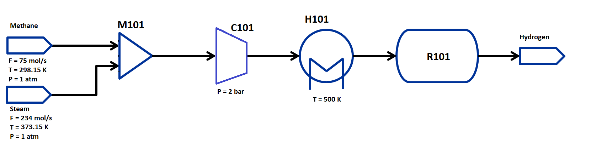

Flowsheet Equilibrium Reactor Simulation and Optimization of Steam Methane Reforming¶
Learning Outcomes¶
Call and implement the IDAES EquilibriumReactor unit model
Construct a steady-state flowsheet using the IDAES unit model library
Connecting unit models in a flowsheet using Arcs
Fomulate and solve an optimization problem
Defining an objective function
Setting variable bounds
Adding additional constraints
Problem Statement¶
This example is adapted from S.Z. Abbas, V. Dupont, T. Mahmud, Kinetics study and modelling of steam methane reforming process over a NiO/Al2O3 catalyst in an adiabatic packed bed reactor. Int. J. Hydrogen Energy, 42 (2017), pp. 2889-2903
Steam methane reforming (SMR) is one of the most common pathways for hydrogen production, taking advantage of chemical equilibria in natural gas systems. The process is typically done in two steps: methane reformation at a high temperature to partially oxidize methane, and water gas shift at a low temperature to complete the oxidation reaction:
This reaction is often carried out in two separate reactors to allow for different reaction temperatures and pressures; in this example, we will minimize operating cost for a single reactor.
The flowsheet that we will be using for this module is shown below with the stream conditions. We will be processing natural gas and steam feeds of fixed composition to produce hydrogen. As shown in the flowsheet, the process consists of a mixer M101 for the two inlet streams, a compressor to compress the feed to the reaction pressure, a heater H101 to heat the feed to the reaction temperature, and a EquilibriumReactor unit R101. We will use thermodynamic properties from the Peng-Robinson equation of state for this flowsheet.
The state variables chosen for the property package are total molar flows of each stream, temperature of each stream and pressure of each stream, and mole fractions of each component in each stream. The components considered are: CH4, H2O, CO, CO2, and H2 and the process occurs in vapor phase only. Therefore, every stream has 1 flow variable, 5 mole fraction variables, 1 temperature and 1 pressure variable.
Importing Required Pyomo and IDAES Components¶
To construct a flowsheet, we will need several components from the Pyomo and IDAES packages. Let us first import the following components from Pyomo: - Constraint (to write constraints) - Var (to declare variables) - ConcreteModel (to create the concrete model object) - Expression (to evaluate values as a function of variables defined in the model) - Objective (to define an objective function for optimization) - TransformationFactory (to apply certain transformations) - Arc (to connect two unit models)
For further details on these components, please refer to the pyomo documentation: https://pyomo.readthedocs.io/en/latest/
From IDAES, we will be needing the FlowsheetBlock and the following
unit models: - Feed - Mixer - Compressor - Heater - EquilibriumReactor -
Product
We will also be needing some utility tools to put together the flowsheet and calculate the degrees of freedom, tools for model expressions and calling variable values, and built-in functions to define property packages, add unit containers to objects and define our initialization scheme.
from pyomo.environ import (Constraint,
Var,
ConcreteModel,
Expression,
Objective,
TransformationFactory,
value,
units as pyunits)
from pyomo.network import Arc
from idaes.core import FlowsheetBlock
from idaes.models.properties.modular_properties.base.generic_property import (
GenericParameterBlock)
from idaes.models.properties.modular_properties.base.generic_reaction import (
GenericReactionParameterBlock)
from idaes.models.unit_models import (Feed,
Mixer,
Compressor,
Heater,
EquilibriumReactor,
Product)
from idaes.core.solvers import get_solver
from idaes.core.util.model_statistics import degrees_of_freedom
from idaes.core.util.initialization import propagate_state
Importing Required Thermophysical and Reaction Packages¶
The final step is to import the thermophysical and reaction packages. We will import natural gas properties from an existing IDAES module, and reaction properties from a custom module to describe equilibrium behavior. These configuration dictionaries provide parameter data that we will pass to the Modular Property Framework.
The reaction package here assumes all reactions reach chemical equilibrium at the given conditions.
The correlations are taken from the following literature:
Int. J. Hydrogen Energy, 42 (2017), pp. 2889-2903
Determining \(k_{eq}^{ref}\)¶
As part of the parameter dictionary, users may define equilibrium reactions using a constant coefficient or built-in correlations for van’t Hoff and Gibbs formulations. Using the literature correlations above for \(k_{eq}\), we can easily calculate the necessary parameters to use the van’t Hoff equilibrium constant form:
For an empirical correlation \(ln(k_{eq}) = f(T)\) for a catalyst (reaction) temperature \(T\), we obtain \(k_{eq}^{ref} = \exp\left({f(T_{eq}^{ref})}\right)\). From the paper, we obtain a reference catalyst temperature of 973.15 K and reaction energies for the two reaction steps; these values exist in the reaction property parameter module in this same directory.
These calculations are contained within the property, reaction and unit model packages, and do not need to be entered into the flowsheet. More information on property estimation may be found in the IDAES documentation on Parameter Estimation.
Let us import the following modules: - natural_gas_PR as get_prop (method to get configuration dictionary) - msr_reaction as reaction_props (contains configuration dictionary)
from idaes.models_extra.power_generation.properties.natural_gas_PR import get_prop
import msr_reaction as reaction_props
Constructing the Flowsheet¶
We have now imported all the components, unit models, and property
modules we need to construct a flowsheet. Let us create a
ConcreteModel and add the flowsheet block.
m = ConcreteModel()
m.fs = FlowsheetBlock(dynamic=False)
We now need to add the property packages to the flowsheet. Unlike the
basic Flash unit model
example,
where we only had a thermophysical property package, for this flowsheet
we will also need to add a reaction property package. We will use the
Modular Property
Framework
and Modular Reaction
Framework.
The get_prop method for the natural gas property module
automatically returns the correct dictionary using a component list
argument. The GenericParameterBlock and
GenericReactionParameterBlock methods build states blocks from
passed parameter data; the reaction block unpacks using
**reaction_props.config_dict to allow for optional or empty keyword
arguments:
thermo_props_config_dict = get_prop(components=["CH4", "H2O", "H2", "CO", "CO2"])
m.fs.thermo_params = GenericParameterBlock(**thermo_props_config_dict)
m.fs.reaction_params = GenericReactionParameterBlock(property_package=m.fs.thermo_params,
**reaction_props.config_dict)
Adding Unit Models¶
Let us start adding the unit models we have imported to the flowsheet.
Here, we are adding a Mixer, a Compressor, a Heater and an
EquilibriumReactor. Note that all unit models should be explicitly
defined with a given property package. In addition to that, there are
several arguments depending on the unit model, please refer to the
documentation for more details on IDAES Unit
Models.
For example, the Mixer is given a list consisting of names to
the two inlets. Note that the Compressor is a PressureChanger
assuming compression operation and with a fixed isentropic compressor
efficiency as the default thermodynamic behavior.
m.fs.CH4 = Feed(property_package=m.fs.thermo_params)
m.fs.H2O = Feed(property_package=m.fs.thermo_params)
m.fs.PROD = Product(property_package=m.fs.thermo_params)
m.fs.M101 = Mixer(property_package=m.fs.thermo_params,
inlet_list=["methane_feed", "steam_feed"])
m.fs.H101 = Heater(property_package=m.fs.thermo_params,
has_pressure_change=False,
has_phase_equilibrium=False)
m.fs.C101 = Compressor(property_package=m.fs.thermo_params)
m.fs.R101 = EquilibriumReactor(
property_package=m.fs.thermo_params,
reaction_package=m.fs.reaction_params,
has_equilibrium_reactions=True,
has_rate_reactions=False,
has_heat_of_reaction=True,
has_heat_transfer=True,
has_pressure_change=False,
has_phase_equilibrium=True)
Connecting Unit Models Using Arcs¶
We have now added all the unit models we need to the flowsheet. However,
we have not yet specifed how the units are to be connected. To do this,
we will be using the Arc which is a Pyomo component that takes in
two arguments: source and destination. Let us connect the outlet
of the Mixer to the inlet of the Compressor, the outlet of the
compressor Compressor to the inlet of the Heater, and the outlet
of the Heater to the inlet of the EquilibriumReactor.
Additionally, we will connect the Feed and Product blocks to the
flowsheet:
m.fs.s01 = Arc(source=m.fs.CH4.outlet, destination=m.fs.M101.methane_feed)
m.fs.s02 = Arc(source=m.fs.H2O.outlet, destination=m.fs.M101.steam_feed)
m.fs.s03 = Arc(source=m.fs.M101.outlet, destination=m.fs.C101.inlet)
m.fs.s04 = Arc(source=m.fs.C101.outlet, destination=m.fs.H101.inlet)
m.fs.s05 = Arc(source=m.fs.H101.outlet, destination=m.fs.R101.inlet)
m.fs.s06 = Arc(source=m.fs.R101.outlet, destination=m.fs.PROD.inlet)
We have now connected the unit model block using the arcs. However, we
also need to link the state variables on connected ports. Pyomo provides
a convenient method TransformationFactory to write these equality
constraints for us between two ports:
TransformationFactory("network.expand_arcs").apply_to(m)
Adding Expressions to Compute Operating Costs¶
In this section, we will add a few Expressions that allow us to
evaluate the performance. Expressions provide a convenient way of
calculating certain values that are a function of the variables defined
in the model. For more details on Expressions, please refer to the
Pyomo Expression
documentation.
For this flowsheet, we are interested in computing hydrogen production in millions of pounds per year, as well as the total costs due to pressurizing, cooling, and heating utilities.
Let us first add an Expression to convert the product flow from
mol/s to MM lb/year of hydrogen. We see that the molecular weight exists
in the thermophysical property package, so we may use that value for our
calculations.
m.fs.hyd_prod = Expression(expr=pyunits.convert(m.fs.PROD.inlet.flow_mol[0]*m.fs.PROD.inlet.mole_frac_comp[0, "H2"]
*m.fs.thermo_params.H2.mw, # MW defined in properties as kg/mol
to_units=pyunits.Mlb/pyunits.yr)) # converting kg/s to MM lb/year
Now, let us add expressions to compute the reactor cooling cost (\\(/s) assuming a cost of 2.12E-5 \\\)/kW, the compression cost (\\(/s) assuming 1.2E-3 \\\)/kW, and the heating utility cost (\\(/s) assuming 2.2E-4 \\\)/kW. Note that the heat duty is in units of Watt (J/s). The total operating cost will be the sum of the costs, expressed in \$/year assuming 8000 operating hours per year (~10% downtime, which is fairly common for small scale chemical plants):
m.fs.cooling_cost = Expression(expr=2.12e-8 * (m.fs.R101.heat_duty[0])) # the reaction is endothermic, so R101 duty is positive
m.fs.heating_cost = Expression(expr=2.2e-7 * m.fs.H101.heat_duty[0]) # the stream must be heated to T_rxn, so H101 duty is positive
m.fs.compression_cost = Expression(expr=1.2E-6 * m.fs.C101.work_isentropic[0]) # the stream must be pressurized, so the C101 work is positive
m.fs.operating_cost = Expression(expr=(3600 * 8000 *(m.fs.heating_cost + m.fs.cooling_cost + m.fs.compression_cost)))
Fixing Feed Conditions¶
Let us first check how many degrees of freedom exist for this flowsheet
using the degrees_of_freedom tool we imported earlier. We expect
each stream to have 8 degrees of freedom, the mixer to have 0 (after
both streams are accounted for), the compressor to have 2 (the pressure
change and efficiency), the heater to have 1 (just the duty, since the
inlet is also the outlet of M101), and the reactor to have 1
(conversion). Therefore, we have 20 degrees of freedom to specify:
temperature, pressure, flow and mole fractions of all five components on
both streams; compressor pressure change and efficiency; outlet heater
temperature; and reactor conversion.
Although the model has eight degrees of freedom per stream, the mole
fractions are not all independent and the physical system only has
seven. Each StateBlock sets a flag defined_state based on any
remaining degrees of freedom; if this flag is set to False a
Constraint is written to ensure all mole fractions sum to one.
However, a fully specified system with defined_state set to True
will not create this constraint and it is the responsibility of the user
to set physically meaningful values, i.e. that all mole fractions are
nonnegative and sum to one. While not necessary in this example, the
Custom Thermophysical Property Package
Example
demonstrates adding a check before writing an additional constraint that
may overspecify the system.
print(degrees_of_freedom(m))
20
We will now be fixing the feed stream to the conditions shown in the
flowsheet above. As mentioned in other tutorials, the IDAES framework
expects a time index value for every referenced internal stream or unit
variable, even in steady-state systems with a single time point $ t = 0
$ (t = [0] is the default when creating a FlowsheetBlock without
passing a time_set argument). The non-present components in each
stream are assigned a very small non-zero value to help with convergence
and initializing. Based on the literature source, we will initialize our
simulation with the following values:
m.fs.CH4.outlet.mole_frac_comp[0, "CH4"].fix(1)
m.fs.CH4.outlet.mole_frac_comp[0, "H2O"].fix(1E-5)
m.fs.CH4.outlet.mole_frac_comp[0, "H2"].fix(1E-5)
m.fs.CH4.outlet.mole_frac_comp[0, "CO"].fix(1E-5)
m.fs.CH4.outlet.mole_frac_comp[0, "CO2"].fix(1E-5)
m.fs.CH4.outlet.flow_mol.fix(75*pyunits.mol/pyunits.s)
m.fs.CH4.outlet.temperature.fix(298.15*pyunits.K)
m.fs.CH4.outlet.pressure.fix(1e5*pyunits.Pa)
m.fs.H2O.outlet.mole_frac_comp[0, "CH4"].fix(1E-5)
m.fs.H2O.outlet.mole_frac_comp[0, "H2O"].fix(1)
m.fs.H2O.outlet.mole_frac_comp[0, "H2"].fix(1E-5)
m.fs.H2O.outlet.mole_frac_comp[0, "CO"].fix(1E-5)
m.fs.H2O.outlet.mole_frac_comp[0, "CO2"].fix(1E-5)
m.fs.H2O.outlet.flow_mol.fix(234*pyunits.mol/pyunits.s)
m.fs.H2O.outlet.temperature.fix(373.15*pyunits.K)
m.fs.H2O.outlet.pressure.fix(1e5*pyunits.Pa)
Fixing Unit Model Specifications¶
Now that we have fixed our inlet feed conditions, we will now be fixing the operating conditions for the unit models in the flowsheet. For the initial problem, let us fix the compressor outlet pressure to 2 bar for now, the efficiency to 0.90 (a common assumption for compressor units), and the heater outlet temperature to 500 K. We will unfix these values later to optimize the flowsheet.
m.fs.C101.outlet.pressure.fix(pyunits.convert(2*pyunits.bar, to_units=pyunits.Pa))
m.fs.C101.efficiency_isentropic.fix(0.90)
m.fs.H101.outlet.temperature.fix(500*pyunits.K)
The EquilibriumReactor unit model calculates the amount of product
and reactant based on the calculated equilibrium constant; therefore, we
will specify a desired conversion and let the solver determine the
reactor duty and heat transfer. For convenience, we will define the
reactor conversion as the amount of methane that is converted.
m.fs.R101.conversion = Var(initialize=0.80, bounds=(0, 1), units=pyunits.dimensionless) # fraction
m.fs.R101.conv_constraint = Constraint(
expr=m.fs.R101.conversion*m.fs.R101.inlet.flow_mol[0]*
m.fs.R101.inlet.mole_frac_comp[0, "CH4"] ==
(m.fs.R101.inlet.flow_mol[0]*m.fs.R101.inlet.mole_frac_comp[0, "CH4"] -
m.fs.R101.outlet.flow_mol[0]*m.fs.R101.outlet.mole_frac_comp[0, "CH4"]))
m.fs.R101.conversion.fix(0.80)
For initialization, we solve a square problem (degrees of freedom = 0). Let’s check the degrees of freedom below:
print(degrees_of_freedom(m))
0
Finally, we need to initialize each unit operation in sequence to solve the flowsheet. As in best practice, unit operations are initialized or solved, and outlet properties are propagated to connected inlet streams via arc definitions as follows:
# Initialize and solve each unit operation
m.fs.CH4.initialize()
propagate_state(arc=m.fs.s01)
m.fs.H2O.initialize()
propagate_state(arc=m.fs.s02)
m.fs.M101.initialize()
propagate_state(arc=m.fs.s03)
m.fs.C101.initialize()
propagate_state(arc=m.fs.s04)
m.fs.H101.initialize()
propagate_state(arc=m.fs.s05)
m.fs.R101.initialize()
propagate_state(arc=m.fs.s06)
m.fs.PROD.initialize()
# set solver
solver = get_solver()
2023-03-04 01:49:04 [INFO] idaes.init.fs.CH4.properties: Starting initialization
2023-03-04 01:49:04 [INFO] idaes.init.fs.CH4.properties: Property initialization: optimal - Optimal Solution Found.
2023-03-04 01:49:04 [INFO] idaes.init.fs.CH4.properties: Property package initialization: optimal - Optimal Solution Found.
2023-03-04 01:49:04 [INFO] idaes.init.fs.CH4: Initialization Complete.
2023-03-04 01:49:04 [INFO] idaes.init.fs.H2O.properties: Starting initialization
2023-03-04 01:49:04 [INFO] idaes.init.fs.H2O.properties: Property initialization: optimal - Optimal Solution Found.
2023-03-04 01:49:04 [INFO] idaes.init.fs.H2O.properties: Property package initialization: optimal - Optimal Solution Found.
2023-03-04 01:49:04 [INFO] idaes.init.fs.H2O: Initialization Complete.
2023-03-04 01:49:04 [INFO] idaes.init.fs.M101.methane_feed_state: Starting initialization
2023-03-04 01:49:04 [INFO] idaes.init.fs.M101.methane_feed_state: Property initialization: optimal - Optimal Solution Found.
2023-03-04 01:49:04 [INFO] idaes.init.fs.M101.steam_feed_state: Starting initialization
2023-03-04 01:49:04 [INFO] idaes.init.fs.M101.steam_feed_state: Property initialization: optimal - Optimal Solution Found.
2023-03-04 01:49:04 [INFO] idaes.init.fs.M101.mixed_state: Starting initialization
2023-03-04 01:49:04 [INFO] idaes.init.fs.M101.mixed_state: Property initialization: optimal - Optimal Solution Found.
2023-03-04 01:49:04 [INFO] idaes.init.fs.M101.mixed_state: Property package initialization: optimal - Optimal Solution Found.
2023-03-04 01:49:04 [INFO] idaes.init.fs.M101: Initialization Complete: optimal - Optimal Solution Found
2023-03-04 01:49:04 [INFO] idaes.init.fs.C101.control_volume.properties_in: Starting initialization
2023-03-04 01:49:04 [INFO] idaes.init.fs.C101.control_volume.properties_in: Property initialization: optimal - Optimal Solution Found.
2023-03-04 01:49:04 [INFO] idaes.init.fs.C101.control_volume.properties_out: Starting initialization
2023-03-04 01:49:04 [INFO] idaes.init.fs.C101.control_volume.properties_out: Property initialization: optimal - Optimal Solution Found.
2023-03-04 01:49:04 [INFO] idaes.init.fs.C101.control_volume.properties_out: Property package initialization: optimal - Optimal Solution Found.
2023-03-04 01:49:04 [INFO] idaes.init.fs.C101.properties_isentropic: Starting initialization
2023-03-04 01:49:04 [INFO] idaes.init.fs.C101.properties_isentropic: Property initialization: optimal - Optimal Solution Found.
2023-03-04 01:49:04 [INFO] idaes.init.fs.C101.properties_isentropic: Property package initialization: optimal - Optimal Solution Found.
2023-03-04 01:49:04 [INFO] idaes.init.fs.C101: Initialization Complete: optimal - Optimal Solution Found
2023-03-04 01:49:04 [INFO] idaes.init.fs.H101.control_volume.properties_in: Starting initialization
2023-03-04 01:49:04 [INFO] idaes.init.fs.H101.control_volume.properties_in: Property initialization: optimal - Optimal Solution Found.
2023-03-04 01:49:04 [INFO] idaes.init.fs.H101.control_volume.properties_out: Starting initialization
2023-03-04 01:49:04 [INFO] idaes.init.fs.H101.control_volume.properties_out: Property initialization: optimal - Optimal Solution Found.
2023-03-04 01:49:04 [INFO] idaes.init.fs.H101.control_volume: Initialization Complete
2023-03-04 01:49:04 [INFO] idaes.init.fs.H101: Initialization Complete: optimal - Optimal Solution Found
2023-03-04 01:49:04 [INFO] idaes.init.fs.R101.control_volume.properties_in: Starting initialization
2023-03-04 01:49:04 [INFO] idaes.init.fs.R101.control_volume.properties_in: Property initialization: optimal - Optimal Solution Found.
2023-03-04 01:49:04 [INFO] idaes.init.fs.R101.control_volume.properties_out: Starting initialization
2023-03-04 01:49:04 [INFO] idaes.init.fs.R101.control_volume.properties_out: Property initialization: optimal - Optimal Solution Found.
2023-03-04 01:49:04 [INFO] idaes.init.fs.R101.control_volume.reactions: Initialization Complete.
2023-03-04 01:49:04 [INFO] idaes.init.fs.R101.control_volume: Initialization Complete
2023-03-04 01:49:04 [INFO] idaes.init.fs.R101: Initialization Complete: optimal - Optimal Solution Found
2023-03-04 01:49:04 [INFO] idaes.init.fs.PROD.properties: Starting initialization
2023-03-04 01:49:04 [INFO] idaes.init.fs.PROD.properties: Property initialization: optimal - Optimal Solution Found.
2023-03-04 01:49:04 [INFO] idaes.init.fs.PROD.properties: Property package initialization: optimal - Optimal Solution Found.
2023-03-04 01:49:04 [INFO] idaes.init.fs.PROD: Initialization Complete.
# Solve the model
results = solver.solve(m, tee=True)
Ipopt 3.13.2: nlp_scaling_method=gradient-based
tol=1e-06
max_iter=200
**************************************************************************
This program contains Ipopt, a library for large-scale nonlinear optimization.
Ipopt is released as open source code under the Eclipse Public License (EPL).
For more information visit http://projects.coin-or.org/Ipopt
This version of Ipopt was compiled from source code available at
https://github.com/IDAES/Ipopt as part of the Institute for the Design of
Advanced Energy Systems Process Systems Engineering Framework (IDAES PSE
Framework) Copyright (c) 2018-2019. See https://github.com/IDAES/idaes-pse.
This version of Ipopt was compiled using HSL, a collection of Fortran codes
for large-scale scientific computation. All technical papers, sales and
publicity material resulting from use of the HSL codes within IPOPT must
contain the following acknowledgement:
HSL, a collection of Fortran codes for large-scale scientific
computation. See http://www.hsl.rl.ac.uk.
**************************************************************************
This is Ipopt version 3.13.2, running with linear solver ma27.
Number of nonzeros in equality constraint Jacobian...: 562
Number of nonzeros in inequality constraint Jacobian.: 0
Number of nonzeros in Lagrangian Hessian.............: 477
Total number of variables............................: 204
variables with only lower bounds: 13
variables with lower and upper bounds: 174
variables with only upper bounds: 0
Total number of equality constraints.................: 204
Total number of inequality constraints...............: 0
inequality constraints with only lower bounds: 0
inequality constraints with lower and upper bounds: 0
inequality constraints with only upper bounds: 0
iter objective inf_pr inf_du lg(mu) ||d|| lg(rg) alpha_du alpha_pr ls
0 0.0000000e+00 1.49e+06 1.00e+00 -1.0 0.00e+00 - 0.00e+00 0.00e+00 0
1 0.0000000e+00 1.35e+04 2.00e-01 -1.0 3.59e+00 - 9.90e-01 9.91e-01h 1
2 0.0000000e+00 3.59e-04 9.99e+00 -1.0 3.56e+00 - 9.90e-01 1.00e+00h 1
3 0.0000000e+00 2.49e-08 8.98e+01 -1.0 2.91e-04 - 9.90e-01 1.00e+00h 1
Number of Iterations....: 3
(scaled) (unscaled)
Objective...............: 0.0000000000000000e+00 0.0000000000000000e+00
Dual infeasibility......: 0.0000000000000000e+00 0.0000000000000000e+00
Constraint violation....: 2.8421709430404007e-14 2.4912878870964050e-08
Complementarity.........: 0.0000000000000000e+00 0.0000000000000000e+00
Overall NLP error.......: 2.8421709430404007e-14 2.4912878870964050e-08
Number of objective function evaluations = 4
Number of objective gradient evaluations = 4
Number of equality constraint evaluations = 4
Number of inequality constraint evaluations = 0
Number of equality constraint Jacobian evaluations = 4
Number of inequality constraint Jacobian evaluations = 0
Number of Lagrangian Hessian evaluations = 3
Total CPU secs in IPOPT (w/o function evaluations) = 0.004
Total CPU secs in NLP function evaluations = 0.002
EXIT: Optimal Solution Found.
Analyze the Results of the Square Problem¶
What is the total operating cost?
print(f"operating cost = ${value(m.fs.operating_cost)/1e6:0.3f} million per year")
operating cost = $45.933 million per year
For this operating cost, what conversion did we achieve of methane to hydrogen?
m.fs.R101.report()
print()
print(f"Conversion achieved = {value(m.fs.R101.conversion):.1%}")
====================================================================================
Unit : fs.R101 Time: 0.0
------------------------------------------------------------------------------------
Unit Performance
Variables:
Key : Value : Units : Fixed : Bounds
Heat Duty : 2.7605e+07 : watt : False : (None, None)
------------------------------------------------------------------------------------
Stream Table
Units Inlet Outlet
Total Molar Flowrate mole / second 309.01 429.02
Total Mole Fraction CH4 dimensionless 0.24272 0.034965
Total Mole Fraction H2O dimensionless 0.75725 0.31487
Total Mole Fraction H2 dimensionless 9.9996e-06 0.51029
Total Mole Fraction CO dimensionless 9.9996e-06 0.049157
Total Mole Fraction CO2 dimensionless 9.9996e-06 0.090717
Temperature kelvin 500.00 868.56
Pressure pascal 2.0000e+05 2.0000e+05
====================================================================================
Conversion achieved = 80.0%
Optimizing Hydrogen Production¶
Now that the flowsheet has been squared and solved, we can run a small optimization problem to determine optimal conditions for producing hydrogen. Suppose we wish to find ideal conditions for the competing reactions. As mentioned earlier, the two reactions have competing equilibria - steam methane reformation occurs more readily at higher temperatures (500-700 C) while water gas shift occurs more readily at lower temperatures (300-400 C). We will allow for variable reactor temperature and pressure by freeing our heater and compressor specifications, and minimize cost to achieve 90% methane conversion. Since we assume an isentopic compressor, allowing compression will heat our feed stream and reduce or eliminate the required heater duty.
Let us declare our objective function for this problem.
m.fs.objective = Objective(expr=m.fs.operating_cost)
Now, we need to add the design constraints and unfix the decision variables as we had solved a square problem until now, as well as set bounds for the design variables (reactor outlet temperature is set by state variable bounds in property package):
m.fs.R101.conversion.fix(0.90)
m.fs.C101.outlet.pressure.unfix()
m.fs.C101.outlet.pressure[0].setlb(pyunits.convert(2*pyunits.bar, to_units=pyunits.Pa)) # pressurize to at least 2 bar
m.fs.C101.outlet.pressure[0].setub(pyunits.convert(10*pyunits.bar, to_units=pyunits.Pa)) # at most, pressurize to 10 bar
m.fs.H101.outlet.temperature.unfix()
m.fs.H101.heat_duty[0].setlb(0*pyunits.J/pyunits.s) # outlet temperature is equal to or greater than inlet temperature
m.fs.H101.outlet.temperature[0].setub(1000*pyunits.K) # at most, heat to 1000 K
We have now defined the optimization problem and we are now ready to solve this problem.
results = solver.solve(m, tee=True)
Ipopt 3.13.2: nlp_scaling_method=gradient-based
tol=1e-06
max_iter=200
**************************************************************************
This program contains Ipopt, a library for large-scale nonlinear optimization.
Ipopt is released as open source code under the Eclipse Public License (EPL).
For more information visit http://projects.coin-or.org/Ipopt
This version of Ipopt was compiled from source code available at
https://github.com/IDAES/Ipopt as part of the Institute for the Design of
Advanced Energy Systems Process Systems Engineering Framework (IDAES PSE
Framework) Copyright (c) 2018-2019. See https://github.com/IDAES/idaes-pse.
This version of Ipopt was compiled using HSL, a collection of Fortran codes
for large-scale scientific computation. All technical papers, sales and
publicity material resulting from use of the HSL codes within IPOPT must
contain the following acknowledgement:
HSL, a collection of Fortran codes for large-scale scientific
computation. See http://www.hsl.rl.ac.uk.
**************************************************************************
This is Ipopt version 3.13.2, running with linear solver ma27.
Number of nonzeros in equality constraint Jacobian...: 569
Number of nonzeros in inequality constraint Jacobian.: 0
Number of nonzeros in Lagrangian Hessian.............: 493
Total number of variables............................: 206
variables with only lower bounds: 14
variables with lower and upper bounds: 176
variables with only upper bounds: 0
Total number of equality constraints.................: 204
Total number of inequality constraints...............: 0
inequality constraints with only lower bounds: 0
inequality constraints with lower and upper bounds: 0
inequality constraints with only upper bounds: 0
iter objective inf_pr inf_du lg(mu) ||d|| lg(rg) alpha_du alpha_pr ls
0 4.5933014e+07 1.49e+06 3.46e+01 -1.0 0.00e+00 - 0.00e+00 0.00e+00 0
1 4.5420427e+07 1.49e+06 1.33e+03 -1.0 1.08e+07 - 4.58e-01 5.96e-03f 1
2 4.2830345e+07 8.68e+05 6.47e+06 -1.0 5.32e+06 - 8.03e-01 4.18e-01f 1
3 4.3111576e+07 1.26e+05 1.06e+07 -1.0 2.54e+06 - 9.54e-01 8.85e-01h 1
4 4.3307552e+07 2.24e+03 3.12e+05 -1.0 3.51e+05 - 9.89e-01 9.86e-01h 1
5 4.3309118e+07 2.20e+01 3.08e+03 -1.0 2.69e+03 - 9.90e-01 9.90e-01h 1
6 4.3309131e+07 5.80e-06 3.84e+01 -1.0 2.31e+01 - 9.92e-01 1.00e+00h 1
7 4.3309131e+07 8.27e-09 1.56e-06 -2.5 1.97e-02 - 1.00e+00 1.00e+00f 1
8 4.3309131e+07 1.33e-08 1.02e-06 -3.8 5.56e-04 - 1.00e+00 1.00e+00f 1
9 4.3309131e+07 1.56e-08 1.63e-06 -5.7 3.08e-05 - 1.00e+00 1.00e+00f 1
iter objective inf_pr inf_du lg(mu) ||d|| lg(rg) alpha_du alpha_pr ls
10 4.3309131e+07 2.20e-08 7.30e-07 -7.0 3.82e-07 - 1.00e+00 1.00e+00h 1
Number of Iterations....: 10
(scaled) (unscaled)
Objective...............: 4.3309130854568794e+07 4.3309130854568794e+07
Dual infeasibility......: 7.2975212709688942e-07 7.2975212709688942e-07
Constraint violation....: 1.4551915228366852e-11 2.2002495825290680e-08
Complementarity.........: 9.0909090913936446e-08 9.0909090913936446e-08
Overall NLP error.......: 9.0909090913936446e-08 7.2975212709688942e-07
Number of objective function evaluations = 11
Number of objective gradient evaluations = 11
Number of equality constraint evaluations = 11
Number of inequality constraint evaluations = 0
Number of equality constraint Jacobian evaluations = 11
Number of inequality constraint Jacobian evaluations = 0
Number of Lagrangian Hessian evaluations = 10
Total CPU secs in IPOPT (w/o function evaluations) = 0.010
Total CPU secs in NLP function evaluations = 0.007
EXIT: Optimal Solution Found.
print(f"operating cost = ${value(m.fs.operating_cost)/1e6:0.3f} million per year")
print()
print('Compressor results')
m.fs.C101.report()
print()
print('Heater results')
m.fs.H101.report()
print()
print('Equilibrium reactor results')
m.fs.R101.report()
operating cost = $43.309 million per year
Compressor results
====================================================================================
Unit : fs.C101 Time: 0.0
------------------------------------------------------------------------------------
Unit Performance
Variables:
Key : Value : Units : Fixed : Bounds
Isentropic Efficiency : 0.90000 : dimensionless : True : (None, None)
Mechanical Work : 7.5471e+05 : watt : False : (None, None)
Pressure Change : 1.0000e+05 : pascal : False : (None, None)
Pressure Ratio : 2.0000 : dimensionless : False : (None, None)
------------------------------------------------------------------------------------
Stream Table
Units Inlet Outlet
Total Molar Flowrate mole / second 309.01 309.01
Total Mole Fraction CH4 dimensionless 0.24272 0.24272
Total Mole Fraction H2O dimensionless 0.75725 0.75725
Total Mole Fraction H2 dimensionless 9.9996e-06 9.9996e-06
Total Mole Fraction CO dimensionless 9.9996e-06 9.9996e-06
Total Mole Fraction CO2 dimensionless 9.9996e-06 9.9996e-06
Temperature kelvin 353.80 423.34
Pressure pascal 1.0000e+05 2.0000e+05
====================================================================================
Heater results
====================================================================================
Unit : fs.H101 Time: 0.0
------------------------------------------------------------------------------------
Unit Performance
Variables:
Key : Value : Units : Fixed : Bounds
Heat Duty : 5.8781e-09 : watt : False : (0, None)
------------------------------------------------------------------------------------
Stream Table
Units Inlet Outlet
Total Molar Flowrate mole / second 309.01 309.01
Total Mole Fraction CH4 dimensionless 0.24272 0.24272
Total Mole Fraction H2O dimensionless 0.75725 0.75725
Total Mole Fraction H2 dimensionless 9.9996e-06 9.9996e-06
Total Mole Fraction CO dimensionless 9.9996e-06 9.9996e-06
Total Mole Fraction CO2 dimensionless 9.9996e-06 9.9996e-06
Temperature kelvin 423.34 423.34
Pressure pascal 2.0000e+05 2.0000e+05
====================================================================================
Equilibrium reactor results
====================================================================================
Unit : fs.R101 Time: 0.0
------------------------------------------------------------------------------------
Unit Performance
Variables:
Key : Value : Units : Fixed : Bounds
Heat Duty : 3.2486e+07 : watt : False : (None, None)
------------------------------------------------------------------------------------
Stream Table
Units Inlet Outlet
Total Molar Flowrate mole / second 309.01 444.02
Total Mole Fraction CH4 dimensionless 0.24272 0.016892
Total Mole Fraction H2O dimensionless 0.75725 0.29075
Total Mole Fraction H2 dimensionless 9.9996e-06 0.54032
Total Mole Fraction CO dimensionless 9.9996e-06 0.067801
Total Mole Fraction CO2 dimensionless 9.9996e-06 0.084239
Temperature kelvin 423.34 910.04
Pressure pascal 2.0000e+05 2.0000e+05
====================================================================================
Display optimal values for the decision variables and design variables:
print('Optimal Values')
print()
print(f"C101 outlet pressure = {value(m.fs.C101.outlet.pressure[0])/1E6:0.3f} MPa")
print()
print(f"C101 outlet temperature = {value(m.fs.C101.outlet.temperature[0]):0.3f} K")
print()
print(f"H101 outlet temperature = {value(m.fs.H101.outlet.temperature[0]):0.3f} K")
print()
print(f"R101 outlet temperature = {value(m.fs.R101.outlet.temperature[0]):0.3f} K")
print()
print(f"Hydrogen produced = {value(m.fs.hyd_prod):0.3f} MM lb/year")
print()
print(f"Conversion achieved = {value(m.fs.R101.conversion):.1%}")
Optimal Values
C101 outlet pressure = 0.200 MPa
C101 outlet temperature = 423.345 K
H101 outlet temperature = 423.345 K
R101 outlet temperature = 910.044 K
Hydrogen produced = 33.648 MM lb/year
Conversion achieved = 90.0%